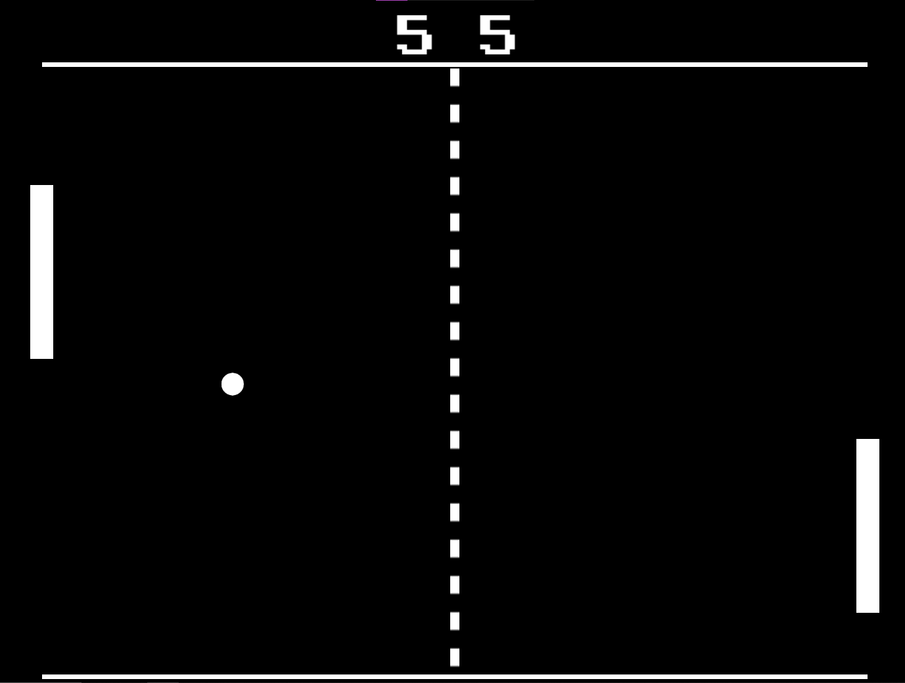

Pong
A simple version of Pong for PC. Made in Godot with C# scripts.
Use W and S to control the Paddle (Player 1) on the left.
Use ▲ and ▼ to control the Paddle (Player 2) on the right.
Press P to Open the Pause Menu.
Have fun :)